No agent inside. Built for what agents build.内核无 Agent，专为 Agent 构建的有状态微应用而生
PneumaSpace deploys many small stateful web apps on one trusted machine you own (M1) or your organization’s Kubernetes cluster (M2/M3). An app is a directory whose manifest, pneuma-space.json, declares the infrastructure capabilities it needs. Publishing is an upload, not a build; the first request wakes the app, idleness puts it to sleep, and its data outlives every sleep, crash, and release.PneumaSpace 在你拥有的一台可信机器（M1）或组织的 Kubernetes 集群（M2/M3）上高密度运行大量有状态微应用。一个应用就是一个目录，用 pneuma-space.json 声明所需的基础设施能力。发布是上传而非镜像构建；首请求按需唤醒，闲置自动休眠（Scale-to-Zero），而持久数据跨越每一次休眠、崩溃与版本发布。
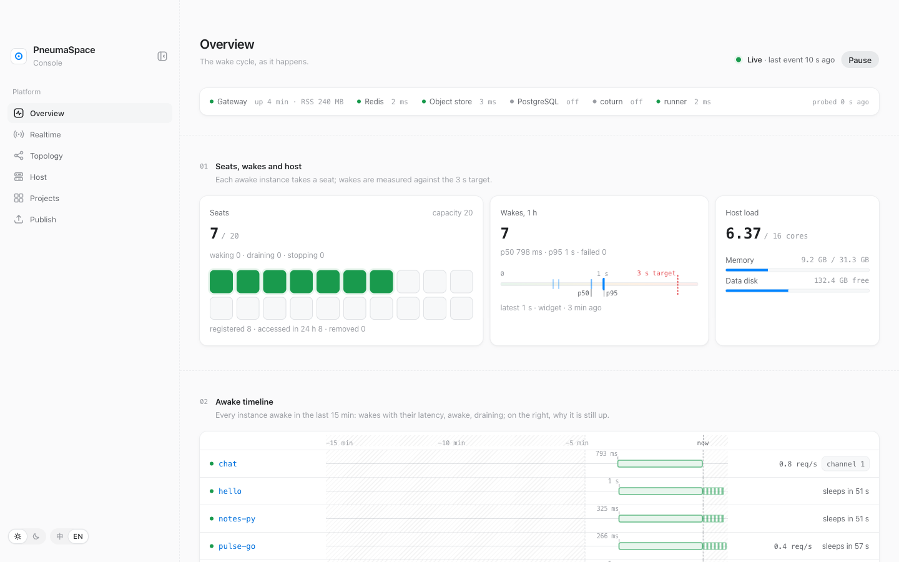
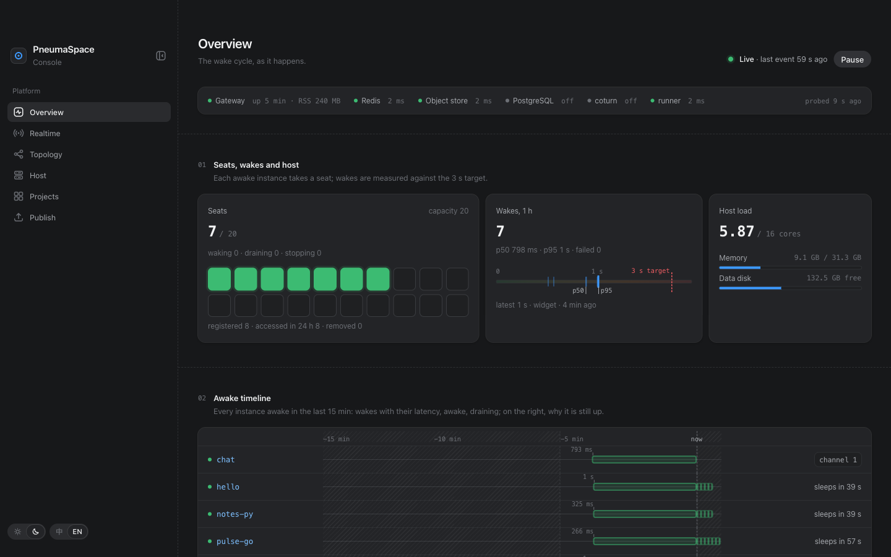
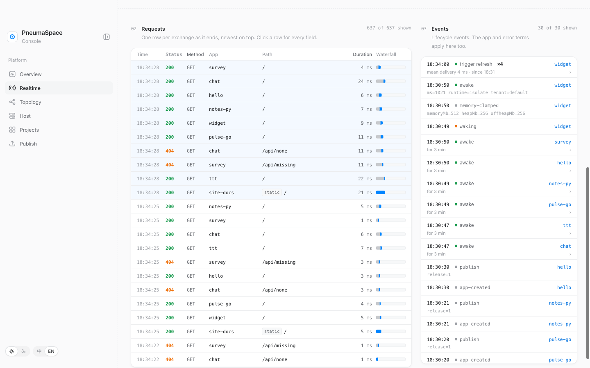
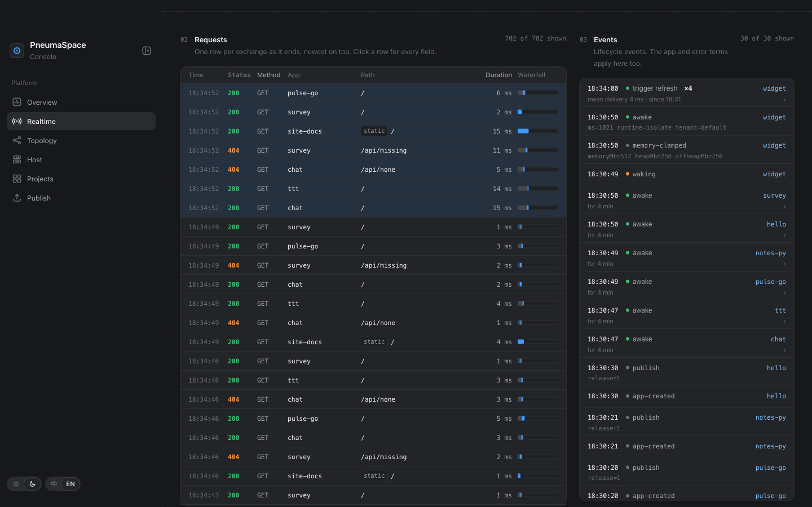
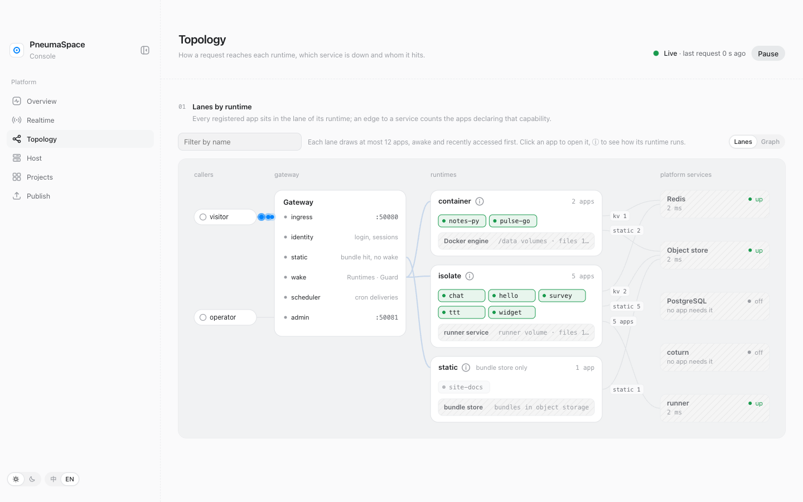
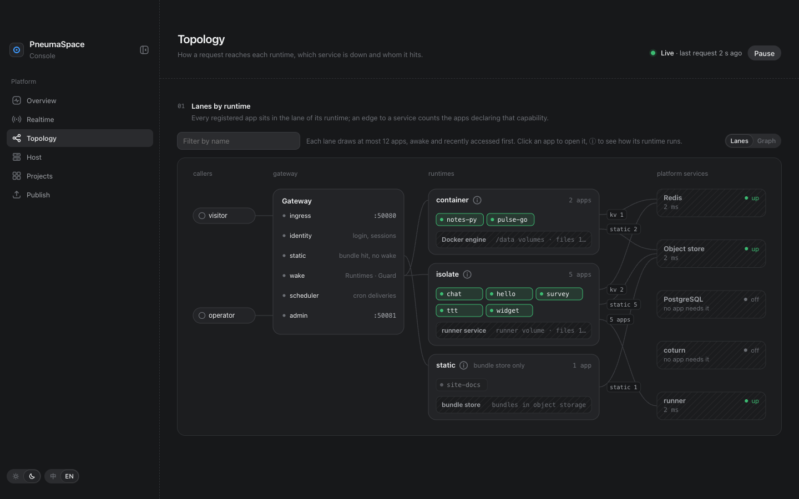
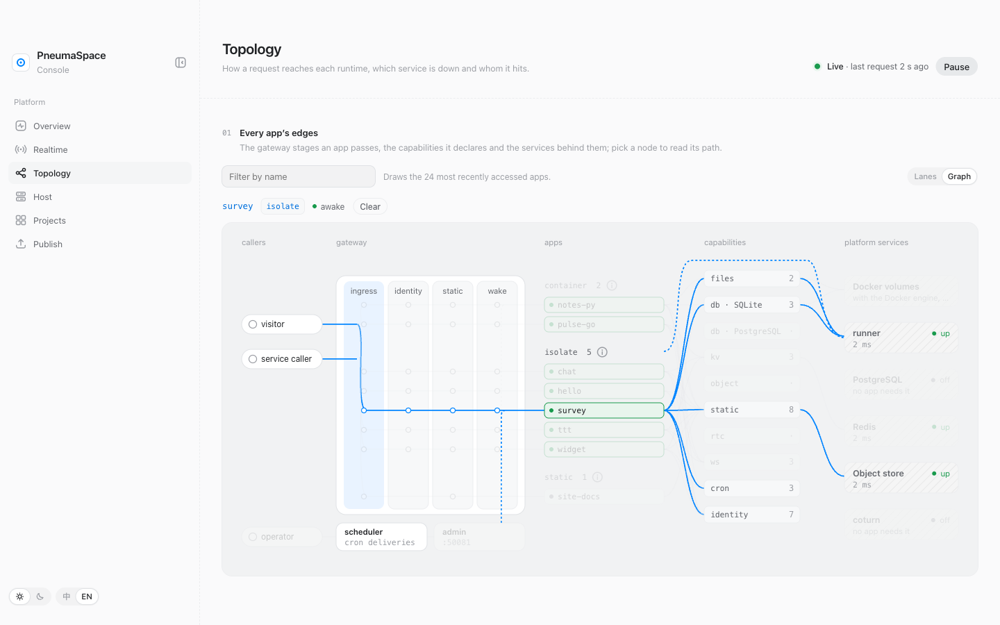
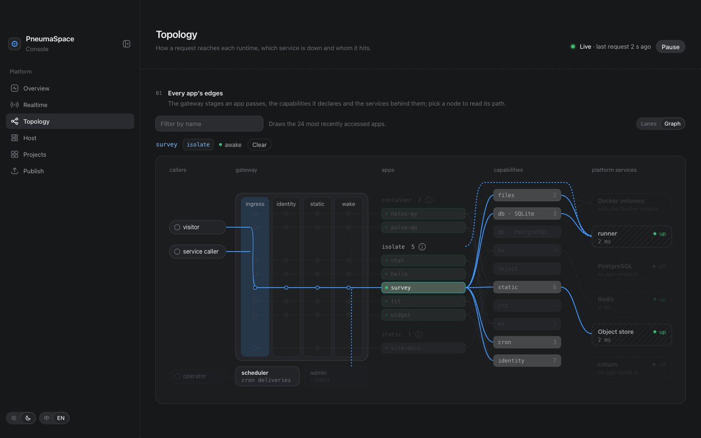
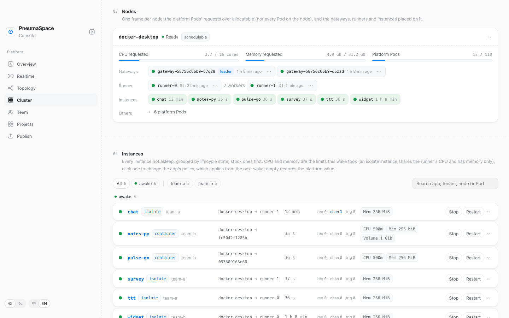
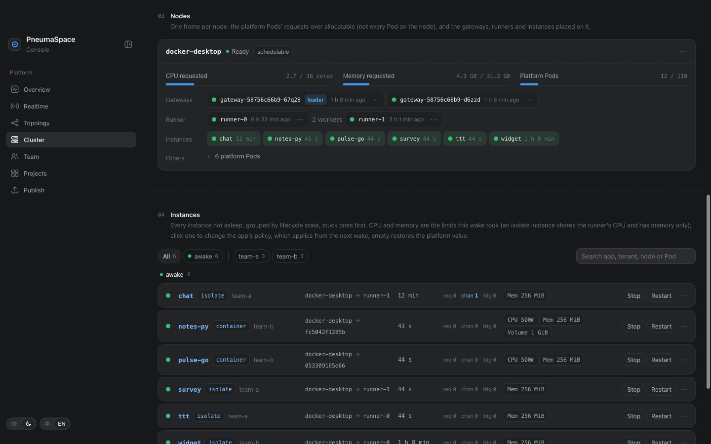
Interactive Manifest & Starter Code Workbench交互式 pneuma-space.json 清单与全栈代码工作台
Click any official example preset or toggle capabilities and runtime lanes below to inspect the exact validated pneuma-space.json manifest, starter TypeScript server code, injected PNEUMA_SPACE_* variables, and under-the-hood Provider wire protocol commands.点击下方任意官方示例预设，或自由组合运行时车道与 9 项显式能力，实时生成经过 parseManifest() 校验的 pneuma-space.json、可直接运行的 TypeScript 服务端代码、注入的环境变量以及底层 Provider 线协议供应动作。
Interactive 9-Step Request & CAS Lifecycle Simulator9 步请求流水线与 CAS 实例状态机交互推演
Walk through the exact code path a request takes through port 8080, or switch to the Hung Worker & Guard Quarantine scenario to see how an infinite loop is stopped in 3.5–4 s and quarantined after 3 failures without a global lock.逐步推演一个请求到达 8080 端口后的 9 个真实代码阶段，或切换到「死循环看门狗与 Guard 隔离」场景，直观理解网关如何在无全局锁的架构下用 CAS 条件更新完成按需唤醒、零 IO 快路径转发与 3.5–4 秒故障熔断。
1. Locate
INV-1 gateway/src/ingress.ts:L251-L270Compared with Vercel and Supabase: Honest Architectural Boundaries与 Vercel 和 Supabase 的对照：诚实的技术边界与取舍
Vercel and Supabase run your app on their multi-tenant cloud infrastructure. PneumaSpace runs every app on a machine or Kubernetes cluster you own.Vercel 和 Supabase 在它们的基础设施上运行你的应用；PneumaSpace 在你自己拥有的一台机器或 Kubernetes 集群上运行所有应用。
What You Gain你获得的能力
- Persistent state per app that survives sleep and release: a
/datadirectory, a SQL database (SQLite or PostgreSQL), a Redis key prefix, and an S3 bucket. Onlypurgeafterremovedeletes data (INV-2).跨越休眠与版本发布的每应用持久状态：独立的/data目录、SQL 数据库（SQLite 或 PostgreSQL）、Redis 键前缀与 S3 桶。发布和下线绝不删数据，只有remove后的purge才会销毁 (INV-2)。 - Scale to zero per app with millisecond wake: a sleeping isolate wakes in 62 to 87 ms (+17–18 MiB RAM while awake), a container in ~260 ms, and a static site answers in <50 ms without waking anything.毫秒级按需唤醒与缩容至零：休眠的 Isolate 应用在 62–87 ms 内唤醒（运行时仅增 17–18 MiB 内存），容器约 260 ms 唤醒，静态站点在 50 ms 内直接响应且不唤醒任何进程。
- Long-lived WebSocket & SSE connections: open connections promote the Lease to
channeland keep the app awake across replicas (INV-3, AC-COLLAB-3).原生保持长连接：WebSocket 与 SSE 升级后将租约转为channel，在连接存续期间跨副本保持实例唤醒 (INV-3, AC-COLLAB-3)。 - Publish without an image build: an isolate directory is live 6.9 s after
appctl publish; hung workers are stopped in 3.5–4 s and quarantined by the Guard without taking neighbours down.免构建极速发布与故障隔离：Isolate 目录在appctl publish后 6.9 秒即上线；死循环应用在 3.5–4 秒内被看门狗强杀并由 Guard 熔断隔离，绝不拖垮相邻应用。 - Zero vendor lock-in & zero gateway npm dependencies: MIT licensed, speaks Docker, Kubernetes, PostgreSQL, Redis, and S3 wire protocols directly from Node.js LTS built-in modules (ADR 0012, ADR 0025).零厂商锁定与网关零 npm 依赖：MIT 开源，网关仅用 Node.js LTS 内置模块直接讲 Docker、K8s、PostgreSQL、Redis 与 S3 线协议 (ADR 0012, ADR 0025)。
What You Give Up (Explicit Non-Goals)你放弃的部分（明确声明的不做边界）
- Global edge reach: runs on your own machine or cluster in one location; no built-in global CDN or edge network (though
PNEUMA_SPACE_OBJECT_PUBLIC_ENDPOINTcan sit behind a CDN in M2).全球边缘网络：运行在你自己的单机或单集群位置，不自带全球 CDN 或边缘节点（M2 中可将公开对象存储端点放到组织 CDN 之后）。 - Hostile multi-tenant isolation in M1/M2: M1 trusts every image on one host; M2 isolates cooperative organization members against accidental cross-impact (NetworkPolicy, browser origin per app, quotas), NOT against hostile code. Hostile workload isolation is an M3 release gate.M1/M2 不防恶意租户代码：M1 假设单机镜像可信；M2 面向同一组织内会犯错但非恶意的成员（提供 NetworkPolicy、每应用独立浏览器源与配额），不承诺对抗性恶意租户隔离（那是 M3 的公开发布门槛）。
- Built-in identity protocol on M1/M2: M1’s
locallogin asks only for a name (identifies, does not authenticate). M2’supstreammode verifies signed JWTs (RS256/ES256/EdDSA) from your organization’s authenticating proxy. M3 addshostedOAuth sign-in.M1/M2 内置密码库：M1 的local登录只问名字（仅标识身份，不认证）；M2 的upstream模式验证组织上游认证代理签发的 JWT；M3 新增hostedGitHub OAuth 登录。 - Managed infrastructure operations: you run Docker Compose or Kubernetes, TLS termination, volume/database backups, and cluster upgrades.全托管基础设施运维：由你或你的组织自行运维 Docker Compose 或 Kubernetes、入口 TLS 证书、存储层备份与升级。
Three Progressive Editions: Same App Contract, Same Codebase三层演进架构（G4）：同一份应用契约，同一套代码库
An app written for M1 publishes to M2 Kubernetes or M3 Hosted SaaS without changing a single line of code (G6).按 docs/app-contract.md 编写的 M1 应用，无需修改一行代码即可发布到 M2 Kubernetes 集群或 M3 托管环境 (G6)。
| Dimension维度 | M1 · Single Trusted HostM1 · 可信单机版 | M2 · Organization EditionM2 · 组织集群版 | M3 · Hosted SaaS & Cloud ProfileM3 · 托管 SaaS 与云端契约实验 |
|---|---|---|---|
| Plane & Store部署平面与平台库 | PNEUMA_SPACE_PLANE=docker · SQLite WAL (/data/pneuma-space.sqlite3) store.ts |
PNEUMA_SPACE_PLANE=kubernetes · Multi-replica Gateway + PostgreSQL SERIALIZABLE store-pg.ts |
Additive hosted identity on Contract 1 stack (ADR 0036) + separate Contract 2 Fetch experiment (cloud/, ADR 0033) |
| Addressing应用地址形态 | Path mode: http://127.0.0.1:8080/apps/<name>/ (X-Forwarded-Prefix: /apps/<name>) |
Subdomain mode: https://<name>.<apps-domain>/ (separate browser origin per app; X-Forwarded-Prefix empty) |
Contract 1: https://<name>.<apps-domain>/ · Contract 2 Fetch: https://<name>--<tenant>.<apps-domain>/ |
| Compute Drivers计算驱动与池 | DockerDriver (keeps stopped container) + StaticPool (runner:8082) |
PodDriver (1 Pod per awake app in pneuma-space-apps) + StatefulSetPool (pinned home runner Pod) |
Contract 1: full container, isolate, static · Contract 2: stateless ES module fetch(request, app) |
| Identity & Authz身份认证与权限 | PNEUMA_SPACE_IDENTITY=local (self-reported name cookie + service tokens; loopback admin API) |
PNEUMA_SPACE_IDENTITY=upstream (verifies RS256/ES256/EdDSA JWT from org proxy; Tenants, admin/member roles, tenant/org/public access) |
PNEUMA_SPACE_IDENTITY=hosted (GitHub OAuth / dev accounts, personal tenant on first sign-in, CSRF, single-use app grants, scoped expiring tokens) |
| Operations & Quotas配额、审计与运维 | Global & per-app Policy, Guard backoff & quarantine, in-memory Overview/Realtime/Topology console |
Per-tenant Quotas (apps, awake, cpu_millis, memory_mb, storage_gb), append-only audit table, 30-day usage heatmaps, Cluster operations page, Prometheus /metrics |
Signup capacity gate (PNEUMA_SPACE_HOSTED_SIGNUP_LIMIT), Caddy origin TLS (ADR 0037), per-app token restrictions & typed purge confirmation |